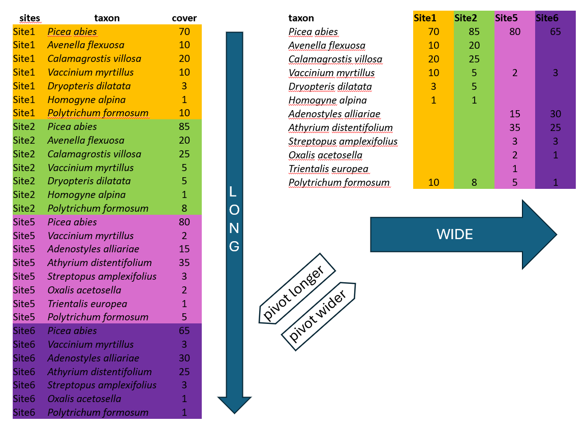
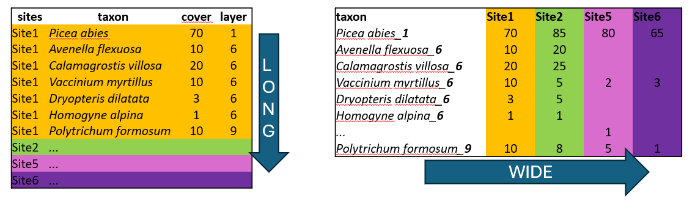
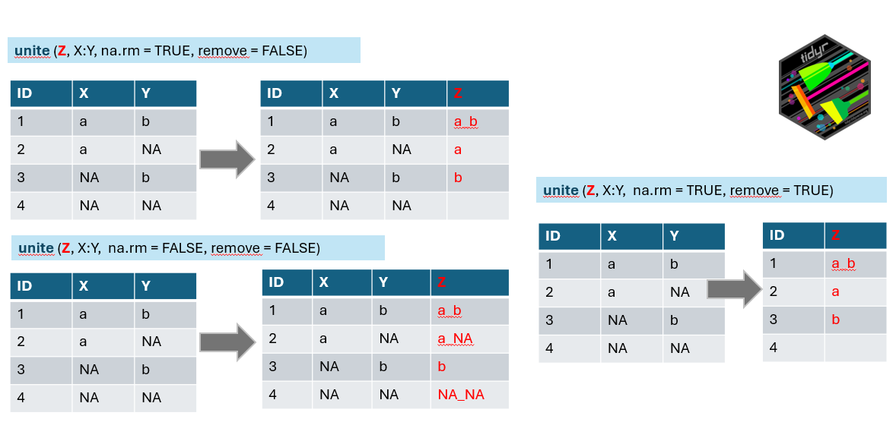

library(tidyverse)
library(readxl)
library(janitor)4 Wide vs.long format
In this chapter we will look at different data formats and how to change one to another. We will define groups within the data and calculate several statistics for them using summarise functions.
4.1 Data formats
There are two main ways how the data can be organised across rows and columns. Wide or long format. We will show you an example of spruce forest data, where we recorded plant species in several sites and at each site we also estimated their abundance, here approximated as percentage cover (higher value means that the species covered larger area of the surveyed vegetation plot, but we do not give the area itself, just value relatively to the total area, i.e. percentage of total area). The covers of species might overlap, as they grow in different heights.

Wide format is more conservative and used in many older packages for ecological data analysis. In our example we list all species and the colums are used to indicate their abundance at each site. This is the way you need to prepare your species matrix for ordinations in vegan. However, wide format has also many cons.
One of them is the size of the file. In the example above, there are abundance of given plants in each of the site. When the species is present in just one site, here Trientalis europaea, it is still keeping space across the whole table, where there can be hundreds or thousands of sites. The table code is then of course memory demanding.
One more point. For many ecological analyses you cannot keep the empty cells empty, since they are recognised as NAs. So you have to do another step and fill them with zeros.
Another disadvantage is that you cannot add easily new information to the listed species. If you for example want to separate species that are in a tree vegetation layer (recognised in vegetation ecology as 1), herb layer (6) and moss layer (9), you would have to add this information to the name of the species e.g. Picea_abies_1. Can you see a conflict with the basic principles of tidyverse?

Long format in contrast, is great for handling large datasets. Imagine we have more sites than those shown in the example above. In this format, we list all the species for Site1, then for Site2 etc. but we list only the species that are really present! By simple count of the rows belonging to each site you have the information about overall species richness.
We can also add any information, describing the data, such as vegetation layers, growth forms, native/alien status etc. After that we can very simply filter, summarise and calculate further statistics.
4.2 From long to wide
We will first start a new script for this chapter and load the libraries. Remember to keep the script tidy and to put there remarks.
Now, we will import the data. In the first example we will again use the Forest understory data from our folder: Link to Github folder However, this time we will upload the species data saved in a long format and we will prepare a matrix in a wide format, so that it can be used in specific ecological analyses e.g. in vegan.
spe <- read_excel("data/forest_understory/Axmanova-Forest-spe.xlsx")
tibble(spe)# A tibble: 2,277 × 4
RELEVE_NR Species Layer CoverPerc
<dbl> <chr> <dbl> <dbl>
1 1 Quercus petraea agg. 1 63
2 1 Acer campestre 1 18
3 1 Crataegus laevigata 4 2
4 1 Cornus mas 4 8
5 1 Lonicera xylosteum 4 3
6 1 Galium sylvaticum 6 3
7 1 Carex digitata 6 3
8 1 Melica nutans 6 2
9 1 Polygonatum odoratum 6 2
10 1 Geum urbanum 6 2
# ℹ 2,267 more rowsWe can see that there are plant species names sorted by RELEVE_NR, where each number indicates a vegetation record from one specific site (can be also called vegetation plot or sample). We will rename this name to make it easier for us as PlotID. Further we may need to change the species names to be in the compact format, without any spaces, just underscores. For this we will use mutate function with str_replace (for string specification) indicating that each space should be changed to underscore and we will directly apply it to the original column.
spe %>%
rename(PlotID= RELEVE_NR)%>%
mutate(Species = str_replace_all(Species, " ", "_"))# A tibble: 2,277 × 4
PlotID Species Layer CoverPerc
<dbl> <chr> <dbl> <dbl>
1 1 Quercus_petraea_agg. 1 63
2 1 Acer_campestre 1 18
3 1 Crataegus_laevigata 4 2
4 1 Cornus_mas 4 8
5 1 Lonicera_xylosteum 4 3
6 1 Galium_sylvaticum 6 3
7 1 Carex_digitata 6 3
8 1 Melica_nutans 6 2
9 1 Polygonatum_odoratum 6 2
10 1 Geum_urbanum 6 2
# ℹ 2,267 more rows*If you want to play a bit, you can create new column (e.g. SpeciesNew) to see both the original name and changed name.
spe %>%
rename(PlotID= RELEVE_NR)%>%
mutate(SpeciesNew = str_replace_all(Species, " ", "_"))# A tibble: 2,277 × 5
PlotID Species Layer CoverPerc SpeciesNew
<dbl> <chr> <dbl> <dbl> <chr>
1 1 Quercus petraea agg. 1 63 Quercus_petraea_agg.
2 1 Acer campestre 1 18 Acer_campestre
3 1 Crataegus laevigata 4 2 Crataegus_laevigata
4 1 Cornus mas 4 8 Cornus_mas
5 1 Lonicera xylosteum 4 3 Lonicera_xylosteum
6 1 Galium sylvaticum 6 3 Galium_sylvaticum
7 1 Carex digitata 6 3 Carex_digitata
8 1 Melica nutans 6 2 Melica_nutans
9 1 Polygonatum odoratum 6 2 Polygonatum_odoratum
10 1 Geum urbanum 6 2 Geum_urbanum
# ℹ 2,267 more rowsNote that in the same way as above you can change different patterns, e.g. removing part of the strings. There are even more complex things we can do, but we will keep it for later as it requires some knowledge of regex rules. Here I created a new column where I removed indication that the species belongs to a complex, i.e.the part of the string saying it is an aggregate, I also prepared a column “check” where I compare if the new and old name are equal or not and filtered just those cases where they are not. This should show me exactly the changed rows. If I am happy with the result, I can then remove the lines with this check and I can even rewrite the original column.
spe %>%
rename(PlotID= RELEVE_NR)%>%
mutate(SpeciesNew = str_replace_all(Species, " agg.", ""))%>%
mutate(check=(SpeciesNew==Species))%>%
filter(check == "FALSE") %>%
select(PlotID, Species, SpeciesNew, check) #select only relevant to see at a first glance# A tibble: 159 × 4
PlotID Species SpeciesNew check
<dbl> <chr> <chr> <lgl>
1 1 Quercus petraea agg. Quercus petraea FALSE
2 1 Rubus fruticosus agg. Rubus fruticosus FALSE
3 1 Quercus petraea agg. Quercus petraea FALSE
4 2 Quercus petraea agg. Quercus petraea FALSE
5 2 Quercus petraea agg. Quercus petraea FALSE
6 3 Quercus petraea agg. Quercus petraea FALSE
7 3 Quercus petraea agg. Quercus petraea FALSE
8 3 Galium pumilum agg. Galium pumilum FALSE
9 3 Senecio nemorensis agg. Senecio nemorensis FALSE
10 3 Veronica chamaedrys agg. Veronica chamaedrys FALSE
# ℹ 149 more rowsWe have the condensed name with underscores, but there are still more variables in the table. We can either remove them or merge them to be included in the final wide format. Here we will go a bit against tidy rules and add the information about the vegetation layer directly to the variable Species using unite function from the package tidyr which merges strings from two or more columns into a new one: A+B =A_B. Default separator is again underscore, unless you specify it differently by sep=XX argument.
Argument na.rm indicates what to do if in one of the combined columns there is no value but NA. We have set this argument to TRUE to remove the NA. If you keep it FALSE it can happen that in some data the new string will be a_NA or NA_b, or even NA_NA (see line 4 of our example).
Remove argument set to TRUE will remove the original columns which we used to combine the new one (in the example above you will have only z). In our case we will keep original columns for visual checking and we will use select function in the next step to remove them.
Note that function that works in an opposite direction is called separate or separate_wider_delim
spe %>%
rename(PlotID= RELEVE_NR)%>%
mutate(Species = str_replace_all(Species, " ", "_"))%>%
unite("SpeciesLayer", Species,Layer, na.rm = TRUE, remove = FALSE) # A tibble: 2,277 × 5
PlotID SpeciesLayer Species Layer CoverPerc
<dbl> <chr> <chr> <dbl> <dbl>
1 1 Quercus_petraea_agg._1 Quercus_petraea_agg. 1 63
2 1 Acer_campestre_1 Acer_campestre 1 18
3 1 Crataegus_laevigata_4 Crataegus_laevigata 4 2
4 1 Cornus_mas_4 Cornus_mas 4 8
5 1 Lonicera_xylosteum_4 Lonicera_xylosteum 4 3
6 1 Galium_sylvaticum_6 Galium_sylvaticum 6 3
7 1 Carex_digitata_6 Carex_digitata 6 3
8 1 Melica_nutans_6 Melica_nutans 6 2
9 1 Polygonatum_odoratum_6 Polygonatum_odoratum 6 2
10 1 Geum_urbanum_6 Geum_urbanum 6 2
# ℹ 2,267 more rowsAt this point we have everything we need to use it as input for the wide format table: PlotID, SpeciesLayer and values of the abundance saved as CoverPerc. One more step is to select only these or to deselect (-) those not needed.
spe %>%
rename(PlotID= RELEVE_NR)%>%
mutate(Species = str_replace_all(Species, " ", "_"))%>%
unite("SpeciesLayer", Species,Layer, na.rm = TRUE, remove = FALSE) %>%
select(PlotID, Species, Layer)# A tibble: 2,277 × 3
PlotID Species Layer
<dbl> <chr> <dbl>
1 1 Quercus_petraea_agg. 1
2 1 Acer_campestre 1
3 1 Crataegus_laevigata 4
4 1 Cornus_mas 4
5 1 Lonicera_xylosteum 4
6 1 Galium_sylvaticum 6
7 1 Carex_digitata 6
8 1 Melica_nutans 6
9 1 Polygonatum_odoratum 6
10 1 Geum_urbanum 6
# ℹ 2,267 more rowsNow we can finaly use the pivot wider function to transform the data. We have to specify from where we are taking the names of new variables (names_from) and from where we should take the values which should appear in the table (values_from).
spe %>%
rename(PlotID= RELEVE_NR)%>%
mutate(Species = str_replace_all(Species, " ", "_"))%>%
unite("SpeciesLayer", Species,Layer, na.rm = TRUE, remove = TRUE) %>%
pivot_wider(names_from = SpeciesLayer, values_from = CoverPerc)# A tibble: 65 × 370
PlotID Quercus_petraea_agg._1 Acer_campestre_1 Crataegus_laevigata_4
<dbl> <dbl> <dbl> <dbl>
1 1 63 18 2
2 2 63 NA NA
3 3 63 NA NA
4 4 38 NA NA
5 5 63 NA NA
6 6 38 NA NA
7 7 63 NA NA
8 8 38 NA NA
9 9 38 NA NA
10 10 63 NA NA
# ℹ 55 more rows
# ℹ 366 more variables: Cornus_mas_4 <dbl>, Lonicera_xylosteum_4 <dbl>,
# Galium_sylvaticum_6 <dbl>, Carex_digitata_6 <dbl>, Melica_nutans_6 <dbl>,
# Polygonatum_odoratum_6 <dbl>, Geum_urbanum_6 <dbl>,
# Anemone_species_6 <dbl>, Viola_mirabilis_6 <dbl>,
# Hieracium_murorum_6 <dbl>, Platanthera_bifolia_6 <dbl>,
# Convallaria_majalis_6 <dbl>, Hepatica_nobilis_6 <dbl>, …There are different combinations of species in each plot, some of them are present and some not. Since we changed the format, all species, even those not occurring in that particular site/plot have to get some values. In long format abundance or some other information is not stored for absent species, so they get NAs. Therefore, one more step is to fill the empty cells by zeros using values_fill. In this case we can do that, because we know that if the species was absent its abundance was exactly 0.
spe %>%
rename(PlotID= RELEVE_NR)%>%
mutate(Species = str_replace_all(Species, " ", "_"))%>%
unite("SpeciesLayer", Species,Layer, na.rm = TRUE, remove = TRUE) %>%
pivot_wider(names_from = SpeciesLayer, values_from = CoverPerc,
values_fill = 0) -> spe_wide4.3 From wide to long
Sometimes it is needed to transform the data from wide to long. Here we need to say which column should not be changed, which is the PlotID (cols = -PlotID). Alternatively would work also -1.
Than we specify what to do with the column names, how they should be saved (names_to). And how to call the column with values (values_to).
spe_wide %>%
pivot_longer(cols = -PlotID, names_to = 'species', values_to = 'cover')# A tibble: 23,985 × 3
PlotID species cover
<dbl> <chr> <dbl>
1 1 Quercus_petraea_agg._1 63
2 1 Acer_campestre_1 18
3 1 Crataegus_laevigata_4 2
4 1 Cornus_mas_4 8
5 1 Lonicera_xylosteum_4 3
6 1 Galium_sylvaticum_6 3
7 1 Carex_digitata_6 3
8 1 Melica_nutans_6 2
9 1 Polygonatum_odoratum_6 2
10 1 Geum_urbanum_6 2
# ℹ 23,975 more rowsWe need to remove the empty rows. Because we filled them before with zeros, we will first finish the transformation and then filter out the rows with cover equal to zero.
spe_wide %>%
pivot_longer(cols = -PlotID, names_to = 'species', values_to = 'cover')%>%
filter(!cover == 0)# A tibble: 2,277 × 3
PlotID species cover
<dbl> <chr> <dbl>
1 1 Quercus_petraea_agg._1 63
2 1 Acer_campestre_1 18
3 1 Crataegus_laevigata_4 2
4 1 Cornus_mas_4 8
5 1 Lonicera_xylosteum_4 3
6 1 Galium_sylvaticum_6 3
7 1 Carex_digitata_6 3
8 1 Melica_nutans_6 2
9 1 Polygonatum_odoratum_6 2
10 1 Geum_urbanum_6 2
# ℹ 2,267 more rowsSometimes we have data with NAs (not zeros) here it is very useful to use argument values_drop_na =TRUE
spe_wide %>%
pivot_longer(cols = -PlotID, names_to = 'species', values_to = 'cover', values_drop_na =TRUE)# A tibble: 23,985 × 3
PlotID species cover
<dbl> <chr> <dbl>
1 1 Quercus_petraea_agg._1 63
2 1 Acer_campestre_1 18
3 1 Crataegus_laevigata_4 2
4 1 Cornus_mas_4 8
5 1 Lonicera_xylosteum_4 3
6 1 Galium_sylvaticum_6 3
7 1 Carex_digitata_6 3
8 1 Melica_nutans_6 2
9 1 Polygonatum_odoratum_6 2
10 1 Geum_urbanum_6 2
# ℹ 23,975 more rows4.4 Group by, count
Using group_by we can define how the data should be arranged into groups. Then we can proceed with asking questions about these groups. Basic function how to summarise the information, is to count the number of rows.
In the first example we are working with species list in a long format. We can easily calculate number of species in each plot/sample by counting corresponding number of rows. First you have to specify what is the grouping variable, here it would be PlotID. And then you can directly count.
spe %>%
rename(PlotID= RELEVE_NR)%>%
group_by(PlotID)%>%
count()# A tibble: 65 × 2
# Groups: PlotID [65]
PlotID n
<dbl> <int>
1 1 44
2 2 17
3 3 16
4 4 22
5 5 15
6 6 22
7 7 23
8 8 24
9 9 28
10 10 19
# ℹ 55 more rowsCount returns number of rows in a new variable called n. You can directly put extra line to your code and rename it. e.g. rename(SpeciesRichness =n). Note that in this case we simply counted all the rows. But we know some woody species might be recorded in tree vegetation layer, as shrub or as a small juvenile, so we potentially calculated such species three times. We can play a bit with distinct function and remove the layer information. Is there a difference in the resulting numbers?
spe %>%
distinct(PlotID= RELEVE_NR, Species)%>%
group_by(PlotID)%>%
count()%>%
rename(SpeciesRichness=n)# A tibble: 65 × 2
# Groups: PlotID [65]
PlotID SpeciesRichness
<dbl> <int>
1 1 42
2 2 16
3 3 15
4 4 20
5 5 14
6 6 19
7 7 22
8 8 23
9 9 22
10 10 18
# ℹ 55 more rowsCount can be used also for other cases. For example I am interested in how many rows/plots/samples in the table are assigned to vegetation types. I will upload the table with descriptive characteristics for each forest plot, named as env, which is a shortcut often used for environmental data file.
env <- read_excel("data/forest_understory/Axmanova-Forest-env.xlsx")
tibble(env)# A tibble: 65 × 13
RELEVE_NR ForestType ForestTypeName Biomass pH_KCl Canopy_E3 Radiation Heat
<dbl> <dbl> <chr> <dbl> <dbl> <dbl> <dbl> <dbl>
1 1 2 oak hornbeam f… 12.8 5.28 80 0.881 0.857
2 2 1 oak forest 9.9 3.24 80 0.933 0.814
3 3 1 oak forest 15.2 4.01 80 0.916 0.850
4 4 1 oak forest 16 3.76 75 0.930 0.948
5 5 1 oak forest 20.7 3.50 70 0.869 0.869
6 6 1 oak forest 46.4 3.8 65 0.918 0.883
7 7 1 oak forest 49.2 3.48 65 0.829 0.803
8 8 2 oak hornbeam f… 48.7 3.68 85 0.869 0.869
9 9 2 oak hornbeam f… 13.8 4.24 80 0.614 0.423
10 10 1 oak forest 79.1 4.00 70 0.905 0.930
# ℹ 55 more rows
# ℹ 5 more variables: TWI <dbl>, Longitude <dbl>, Latitude <dbl>,
# deg_lon <dbl>, deg_lat <dbl>And calculate the number of plots in each forest type.
env %>%
group_by(ForestTypeName)%>%
count() # A tibble: 4 × 2
# Groups: ForestTypeName [4]
ForestTypeName n
<chr> <int>
1 alluvial forest 11
2 oak forest 16
3 oak hornbeam forest 28
4 ravine forest 10We can even skip the group_by step and directly specify what to count, which is very useful.
env %>%
count(ForestTypeName)# A tibble: 4 × 2
ForestTypeName n
<chr> <int>
1 alluvial forest 11
2 oak forest 16
3 oak hornbeam forest 28
4 ravine forest 10Count can be very useful to check for duplicate rows. You can ask to count for example IDs in the file where you expect unique ID at each row and filter those results that have more occurrences than 1. In the example below, each ID was used just once, so the filter returns no rows. Such a check is important especially if you need to append another information by join functions.
env %>%
count(PlotID=RELEVE_NR) %>%
filter(n>1)# A tibble: 0 × 2
# ℹ 2 variables: PlotID <dbl>, n <int>4.5 Summarise
Using group_by and summarise we can calculate e.g. mean values, or total sum of the values within the group. See more in the further reading. Here is an example of summarise for environmental data:
env %>%
group_by(ForestTypeName) %>%
summarise(meanBiomass= mean(Biomass))# A tibble: 4 × 2
ForestTypeName meanBiomass
<chr> <dbl>
1 alluvial forest 148.
2 oak forest 26.7
3 oak hornbeam forest 44.4
4 ravine forest 79.1Summarise is also very useful for species data. For example, we can calculate the total abundance, approximated as cover, of all plants in the plot/sample. Later on we can ask what is the relative share of parasites, endangered or alien species. Or we can calculate community mean of some traits, such as the mean height of the plants or their mean leaf area index. For this we would have to append new information, so we will leave it for next chapter.
spe %>%
group_by(PlotID=RELEVE_NR) %>%
summarise(totalCover= sum(CoverPerc))# A tibble: 65 × 2
PlotID totalCover
<dbl> <dbl>
1 1 164
2 2 115
3 3 101
4 4 96
5 5 109
6 6 121
7 7 147
8 8 185
9 9 128
10 10 174
# ℹ 55 more rowsWe can also define more variables we want to summarise and more functions we want to apply. Try to find out more here. Below is an example of iris dataset, where I decided to get minimum,mean and maximum values for sepal leaves in different species.
glimpse(iris)Rows: 150
Columns: 5
$ Sepal.Length <dbl> 5.1, 4.9, 4.7, 4.6, 5.0, 5.4, 4.6, 5.0, 4.4, 4.9, 5.4, 4.…
$ Sepal.Width <dbl> 3.5, 3.0, 3.2, 3.1, 3.6, 3.9, 3.4, 3.4, 2.9, 3.1, 3.7, 3.…
$ Petal.Length <dbl> 1.4, 1.4, 1.3, 1.5, 1.4, 1.7, 1.4, 1.5, 1.4, 1.5, 1.5, 1.…
$ Petal.Width <dbl> 0.2, 0.2, 0.2, 0.2, 0.2, 0.4, 0.3, 0.2, 0.2, 0.1, 0.2, 0.…
$ Species <fct> setosa, setosa, setosa, setosa, setosa, setosa, setosa, s…iris%>%
group_by(Species)%>%
summarise(across(c(Sepal.Length, Sepal.Width), list(min= min, mean = mean, max = max )))# A tibble: 3 × 7
Species Sepal.Length_min Sepal.Length_mean Sepal.Length_max Sepal.Width_min
<fct> <dbl> <dbl> <dbl> <dbl>
1 setosa 4.3 5.01 5.8 2.3
2 versicolor 4.9 5.94 7 2
3 virginica 4.9 6.59 7.9 2.2
# ℹ 2 more variables: Sepal.Width_mean <dbl>, Sepal.Width_max <dbl>4.6 Exercises
1. Forest Understory Data - download the data from the repository Link to Github folder and save it into your project folder. This dataset is used above in the chapter, please use it to prepare your own script with remarks, copy and train what is described above. Note that you will use species data in long format: Axmanova-Forest-spe.xlsx, and environmental data Axmanova-Forest-env.xlsx
2. Use Spruce forest data used in the graphical example in the beginning of this chapter. 2a, Import spruce_forestWIDE.xlsx > transform wide to long format > keep only true presences > calculate species richness for each site (count of number of species). 2b, Import also spruce_forestLONG.xlsx > and transform long to wide format.
3. Train transformation of wide to long with another dataset Acidophilous grasslands namely the species file called SW_moravia_acidgrass_species.csv. Import the data and check structure > transform the format to long, remove absences. *Use separate_wider_delim function to separate information about species name and layer into two variables.
4. Work with dataset Lepidoptera, namely spe_matrix_MSvejnoha, which is the species file with counts of moths in forest steppe localities. Import the data and check the structure > transform to long format > count number of individuals at each site > create barplot to visualise the differences (ggplot2, geom_col). *for comparison you can calculate the number of species (unique names) and visualise this as well.
5. Use Forest understory environmental data Axmanova-Forest-env.xlsx> prepare a new variable which will combine Forest type code and name (unite) > calculate mean values of biomass for these forest types (group_by, summarise) > prepare a graph with boxplots of forest type and biomass (ggplot2, geom_boxplot). *you can also play more with the data, calculate min, mean and max values for biomass and soil pH at once.
6. We will use the iris dataset integrated in R. Use glimpse(iris) to check the structure > if needed change the format to tibble using as_tibble function (iris.data<- iris %>% as_tibble()) > calculate median values for selected parameters within different iris species.
7. “Tidy datasets are all alike, but every messy dataset is messy in its own way.” Hadley Wickham Import Example4 from the Messy data and try to find duplicate rows.
8. * Import Example2 from the Messy data and try to make the data tidy with the use of separate function. This works in an opposite direction to unite.
4.7 Further reading
Summarise https://dplyr.tidyverse.org/reference/summarise.html
Summarise multiple columns https://dplyr.tidyverse.org/reference/summarise_all.html
Data transformation in R for data science https://r4ds.hadley.nz/data-transform.html
Data tidying including pivoting https://r4ds.hadley.nz/data-tidy.html